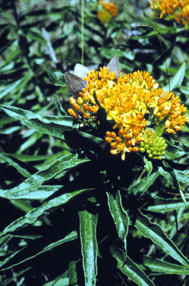
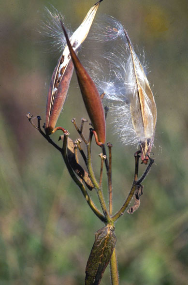
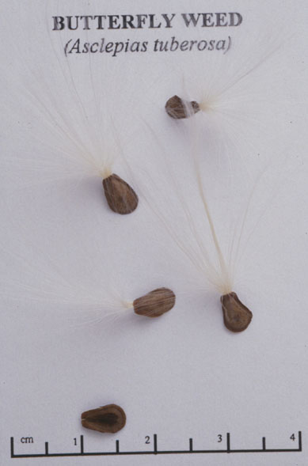

Asclepias tuberosa
Family: Asclepiadaceae
Butterfly Weed
Swink/Wilhelm #8


FLOWERING: Mid-June to September
SEED TIMING: Late September to Mid-October
HABITAT: Mostly dry to mesic prairies
DIAGNOSTIC FEATURES: Herbaceous perennial. 1 to 2 feet tall, hairy. Leaves alternate and lanceolate or linear with slightly clasping bases. Flowers bright orange or yellow, in peduncles.
TO PICK: Seeds with downy parachutes form in erect pods, typically a few pods per plant. Look for ripened pods. Ripeness indicated when pod loses much of its original green color and/or begins to split open naturally. The seeds also indicate ripeness if they have become tan or brown.